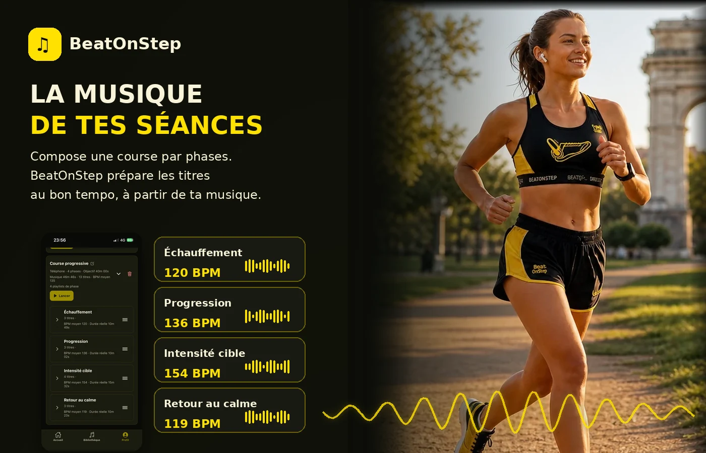
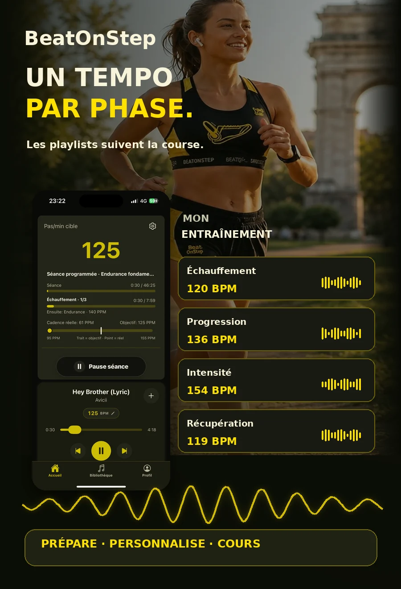

Choisis ta course
Choose your run
Endurance, course progressive, fractionné ou séance personnalisée : définis tes phases et leur BPM cible.
Endurance, progressive, intervals or a custom session: set up phases and their target BPM.

Playlists de séance
Workout playlists
Échauffement, progression, effort, retour au calme : BeatOnStep compose ta séance musicale à partir de tes morceaux et du BPM de chaque phase. Tu ajustes, tu lances, tu cours.
Warm-up, build-up, effort, cool-down: BeatOnStep puts together a workout soundtrack from your music and each phase’s target tempo. Fine-tune it, press play and run.
Découvrir les séances et playlists partagées →Explore shared workouts and playlists →

Endurance, course progressive, fractionné ou séance personnalisée : définis tes phases et leur BPM cible.
Endurance, progressive, intervals or a custom session: set up phases and their target BPM.
BeatOnStep pioche dans les titres disponibles de ta source musicale et privilégie les BPM proches de chaque phase, sans répéter inutilement les morceaux.
BeatOnStep draws from tracks in your chosen music source, prioritizes the nearest BPM for each phase and avoids unnecessary repeats.
Consulte les titres, remplace-les, change leur ordre et adapte la structure. Ta sélection est enregistrée avec ta séance.
Preview, replace and reorder tracks, or adjust the structure. Your selection is saved with your workout.
Retrouve la phase en cours, les barres de progression, le tempo visé et ta cadence réelle pendant la course.
Follow the current phase, progress bars, target tempo and your real cadence while running.
Une séance, plusieurs ambiances
One workout, multiple moods
Une séance progressive peut enchaîner quatre playlists de phase : la musique accompagne l’effort à mesure que l’intensité évolue.
A progression run can combine four phase playlists, with music evolving as your effort builds.
Exemple basé sur une séance réelle. Le nombre de titres et la durée musicale varient selon la bibliothèque.
Based on a real workout example. Track count and actual playback time depend on your library.

La sélection dépend des titres disponibles dans la source choisie et de leurs durées. Les BPM connus sont privilégiés. Les morceaux sont lus en entier : la durée musicale réelle peut différer du découpage prévu.
Selection depends on tracks available from your chosen source and their durations. Known BPM values are preferred. Full tracks are played, so actual playback time may differ from planned phase durations.
Retrouve les séances programmées dans BeatOnStep.
Find planned workouts in BeatOnStep.